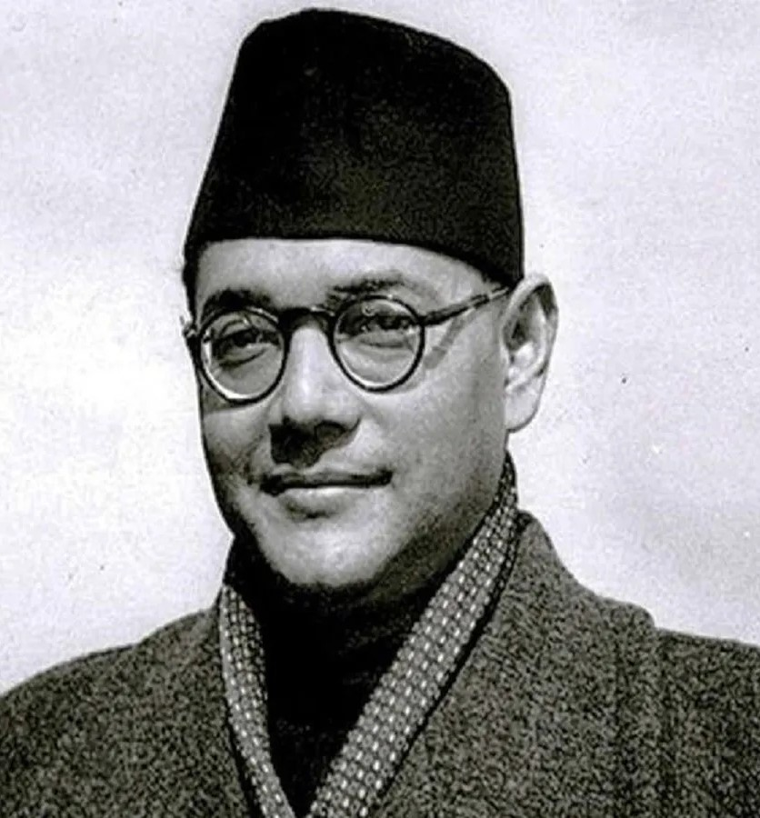

Birth : 23 January 1897 Cuttack, Orissa Division, Bengal Province, British India (now in Cuttack district, Odisha, India)
Positions :President of the Indian National Congress President of the All India Forward Bloc 2nd Leader of Indian National Army 5th Mayor of Calcutta
Parents : Janakinath Bose and Prabhabati Bose
Known for :Indian Independence movement
POlitical party : Indian National Congress , All India Forward Bloc

1. “Give me blood and I will give you freedom”
2. “Dilli Chalo ("On to Delhi)!”
3. “Ittehad, Etemad, Qurbani" (Urdu for "Unity, Agreement, Sacrifice").”
4. “Freedom is not given,it is taken”
-Some great words by Nethaji
Biography
Early Life
Subhas Chandra Bose was born to Prabhavati Bose and Janakinath Bose on 23 January 1897 in Cuttack—in what is today the state of Odisha in India, but was then the Orissa Division of Bengal Province in British India
Jankinath, a successful lawyer and government pleader, was loyal to the government of British India and scrupulous about matters of language and the law. A self-made man from the rural outskirts of Calcutta, he had remained in touch with his roots, returning annually to his village during the pooja holiday.
In 1909 the 12-year-old Subhas Bose followed his five brothers to the Ravenshaw Collegiate School in Cuttack.[8] Here, Bengali and Sanskrit were also taught, as were ideas from Hindu scriptures such as the Vedas and the Upanishads not usually picked up at home.
At his father's urging, Subhas Bose agreed to travel to England to prepare and appear for the Indian Civil Services (ICS) examination.Arriving in London on 20 October 1919, Subhas readied his application for the ICS..
Political career
By 1938 Bose had become a leader of national stature and agreed to accept nomination as Congress President. He stood for unqualified Swaraj (self-governance), including the use of force against the British. This meant a confrontation with Mohandas Gandhi, who in fact opposed Bose's presidency, splitting the Indian National Congress party.
In 1943, after being disillusioned that Germany could be of any help in gaining India's independence, Bose left for Japan. He travelled with the German submarine U-180 around the Cape of Good Hope to the southeast of Madagascar, where he was transferred to the I-29 for the rest of the journey to Imperial Japan. This was the only civilian transfer between two submarines of two different navies in World War II.
In July, at a meeting in Singapore, Rash Behari Bose handed over control of the organisation to Subhas Chandra Bose. Bose was able to reorganise the fledgling army and organise massive support among the expatriate Indian population in south-east Asia, who lent their support by both enlisting in the Indian National Army, as well as financially in response to Bose's calls for sacrifice for the independence cause.
INA had a separate women's unit, the Rani of Jhansi Regiment (named after Rani Lakshmi Bai) headed by Capt. Lakshmi Swaminathan, which is seen as a first of its kind in Asia
Subhas Chandra Bose's death occurred from third-degree burns on 18 August 1945 after his overloaded Japanese plane crashed in Japanese-ruled Formosa (now Taiwan). However, many among his supporters, especially in Bengal, refused at the time, and have refused since, to believe either the fact or the circumstances of his death
Things to know
Bose was featured on the stamps in India from 1964, 1993, 1997, 2001, 2016, 2018 and 2021.
Netaji Subhas Chandra Bose International Airport at Kolkata, Netaji Subhash Chandra Bose Island, formerly Ross Island and many other institutions in India are named after him.
In 2021, the Government of India declared 23 January as Parakram Divas to commemorate the birth anniversary of Subhas Chandra Bose
Netaji Subhash, a feature documentary film about Bose was released in 1947, it was directed by Chhotubhai Desai
In 2004, Shyam Benegal directed the biographical film, Netaji Subhas Chandra Bose: The Forgotten Hero depicting his life in Nazi Germany (1941–1943), in Japanese-occupied Asia (1943–1945) and the events leading to the formation of Azad Hind Fauj.
Mahanayak, 2005 published Marathi historical novel on the life of Subhash Chandra Bose, written by Marathi author Vishvas Patil.